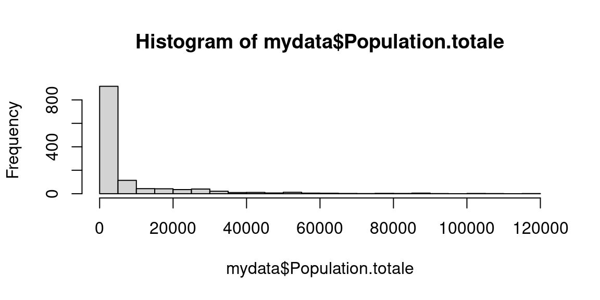

Chapitre 3 Analyse Univariée
3.1 Le concept de distribution
L’analyse univariée a pour but de décrire et mesurer la répartition des valeurs que peut prendre une variable.
On appelle la répartition des valeurs d’un variable sa distribution , que l’on peut approximativement voir comme son «histogramme en continu».
Voilà une distribution d’une variable réelle (courbe noire), superposée à son histogramme :

Vous pouvez voir avec cet exemple, que la courbe suit les variations de hauteur des colonnes de l’histogramme, tout en lissant les aspérités.
C’est de cette courbe que l’on parle lorsqu’on évoque la distribution de la variable.
Plus formellement, pour une population donnée, la distribution d’une variable \(V\) est définie comme une fonction qui donne la probabilité qu’un individu \(x\) pris au hasard dans la population ait la valeur \(V_x\) pour la variable \(V\) : \[distribution(V) \equiv P(V=V_x), \forall V_x \in \Omega_V\] avec \(\Omega_V\) l’ensemble des valeurs que peut prendre \(V\) : l’univers de \(V\). Lorsque la variable prend des valeurs réelles, on parle de densité de probabilité, c’est pourquoi on retrouve ce terme “density” sur les axes des ordonnées dans les graphiques de distribution.
La forme d’une distribution donne beaucoup d’informations sur les valeurs d’une variable dans une population :
- valeurs les plus représentées dans la population : les “pics”
- présence de valeurs extrêmes : la courbe de la distribution est tirées à gauche ou à droite du graphique
- caractéristiques de sa forme : symétrie, aplatissement etc…
Dans notre exemple de distribution de longueur de nageoires en millimètres, on observe deux pics assez doux : l’un aux alentours de 190mm, l’autre de 215mm. On peut l’interpréter ainsi : «la valeurs la plus représentée dans les longueurs de nageoires de cette population de pingouins est de 190mm, suivie de 215mm»
3.1.1 Interpréter la courbe de densité
L’histogramme représente l’effectif de la population en fonction de la valeur d’une variable, son interprétation est directe et aisée puisque ce graphique donne une représentation du nombre d’individus par intervalles de valeurs.
La représentation d’une distribution est légèrement plus délicate à comprendre mathématiquement. En première approximation , vous pouvez l’interpréter comme un histogramme dont les barres seraient infiniement fines, et dont l’axe des \(y\) représenteraient une probabilité au lieu d’un effectif.
La densité de probabilité comme son nom l’indique, représente des probabilités: celles d’obtenir, pour un individu dans la population, une certaine valeur de la variable.
Le point délicat est qu’une variable continue (i.e. définie sur un intervalle de \(\mathbb{R}\)), peut prendre une infinité de valeurs possibles, et que la probabilité d’obtenir exactement, c’est à dire avec une précision infinie, une valeur est infinitésimale, en fait carrément nulle.
Il faut alors considérer la probabilité d’obtenir une valeur, non pas de façon exacte , mais dans un intervalle de valeur. Par exemple, dans le graphique ci-dessous, de s’intérroger sur la probabilité , pour un individu tiré au hasard dans la population , d’avoir une valeur de Variable 1 dans l’intervalle [25;30].
Cela pourrait s’écrire \(P( 25 \leq V_1 \leq 30)\) et serait égal à l’intégrale de la fonction de densité notée \(f_{V_1}\) entre les bornes 25 et 30 de l’intervalle de \(V_1\) :
\[P( 25 \leq V_1 \leq 30) = \int_{25}^{30} f_{V_1}(x)dx\]
En pratique , le graphique d’une densité s’interprète en observant la quantité d’aire sous la courbe
L’aire totale sous la courbe vaut 1 (cela revient à considérer la somme de toutes les probabilités d’avoir une valeur particulière \(X\) dans l’intervalle de valeur de \(V_1\)) et par approximation , la valeur de la probabilité d’obtenir une certaine valeur se lit comme la proportion d’aire sous la courbe comprise entre deux bornes proche de la valeur.
## [1] 3.735817
ici , la valeur de \(P( 25 \leq V_1 \leq 30)\) vaut XXX
3.2 Exemples de distributions de lois connues
Parfois certaines distributions ressemblent à des distributions bien connues : on appelle ces distributions des lois.
Ce sont des distributions de probabilités que l’on peut formaliser par une équation et dont les statisticiens ont pu dériver des caractéristiques par le calcul.
3.2.1 Loi Gaussienne
La plus connue est la distribution Gaussienne, on dit aussi distribution normale du nom de la loi de probabilité qu’elle suit : la loi dite normale.
Cette loi a deux paramètres :
- \(\mu\) la moyenne, i.e. la valeur moyenne qu’auront les valeurs tirées de cette distribution
- \(\sigma\) l’écart type, qui représente leur écartement par rapport à cette moyenne
Nous reviendrons plus loin sur ces deux caractéristiques
Voici la distribution d’une population dont la variable \(V1\) suit une loi normale de moyenne 0 et d’écart-type 1, qu’on note \(\mathscr{N}(0,1)\)
xx <- data.frame(value=rnorm(8000))
plot1 <- ggplot(xx)+
geom_density(aes(x = value), color="#aaaaaa", fill="#44DD99" )+
theme_light()+
labs(title = "Loi Normale", x="Valeur de la variable V1 ", y="densité")
plot1
Voici un histogramme de la même population
plot1 <- ggplot(xx)+
geom_histogram(aes(x = value),bins = 50, color="#aaaaaa", fill="#44DD99" )+
theme_light()+
labs(title = "Loi Normale", x="Valeur de la variable V1", y="Effectif")
plot1
3.2.2 Loi uniforme
Comme son nom l’indique, la loi uniforme vaut partout la même valeur entre deux bornes \(a\) et \(b\), autrement dit , la probabilité d’obtenir une certaine valeur \(v\in[a;b]\) est constante.
La forme de sa distribution est théoriquement une fonction en créneau, qui vaut 1 partout mais en pratique quand on échantillonne (i.e. génère) des valeurs suivant cette loi, même un grand nombre de fois, la distribution, qui devrait être plate, est courbée aux extrémités.

La forme de sa distribution est théoriquement une fonction en créneau, qui vaut 1 partout sur \([a;b]\) mais en pratique quand on échantillonne (i.e. génère) des valeurs suivant cette loi, même un grand nombre de fois comme ici, la distribution, qui devrait être plate, est courbée aux extrémités. Cela est dû à la façon dont R estime la densité numériquement, biaisée aux extrémités de l’intervalle
3.2.3 Loi log-normale
La loi log-normale est comme son nom l’indique, le résultat d’un logarithme appliqué à une variable suivant une loi normale. Notez comme la distribution est «tirée vers la droite». On parle de «queue de distribution».
Cette longue queue (“fat tail” in english) indique une grande inégalité dans la population: quelques individus, peu nombreux mais aux valeurs de variable très élevées, et une vaste majorité d’individus dont la valeur de la variable est faible qui constitue le pic de la distribution.

Cette loi modélise par exemple l’effet d’un «grand nombre de petits facteurs considérés comme indépendants».
Wikipedia nous apprend qu’elle modélise des phénomènes réels tels que la répartition de 97% des salaires du monde, celle de la la longueur et le poids de spécimen d’animaux, la durée des parties d’échecs, etc.
3.3 Histogramme d’une distribution réelle
Les distribution de données empiriques ont rarement des formes aussi régulière et identifiable que celles des lois. Voici par exemple l’histogramme de la hauteur des arbres à Paris, selon les données disponibles sur [https://opendata.paris.fr/]

Cet histogramme n’est pas très informatif en l’état : si on le lit naïvement, il semblerait que tous les arbres aient une valeur nulle ou quasi-nulle pour leur hauteur en mètres et la circonférences de leur tronc en centimètres.
Pourquoi ?
Parce que le logiciel qui trace l’histogramme (R) fait du mieux qu’il peut pour tracer les colonnes de l’histogramme correspondant aux valeurs :
- il ne doit pas en oublier,
- la hauteur des colonnes doit correspondre à l’effectif (le nombre) d’individus (ici des arbres) par valeur de la variable
- l’échelle de l’axes \(x\) doit «faire tenir» l’étendue des valeurs (\(x_{max} - x_{min}\)),sur une quantité de pixels limitée.
Ce qui se produit ici est que certains individus ont des hauteurs ou des circonférences renseignées à des valeurs totalement irréalistes, comme nous l’indique les bornes du dernier décile (i.e. les 10% des valeurs les plus élevées ) :
## 0% 10% 20% 30% 40% 50% 60% 70% 80% 90% 100%
## 0 0 4 5 6 8 10 11 15 16 88181810% des arbres ont une hauteur comprise entre 12 et 881818 mètres: il y a donc quelques arbres, au moins un, dont la hauteur est clairement defectueuse, on peut supposer qu’il s’agit d’une erreur de saisie ou d’ encodage des données (les plus hauts arbres font autour de 120m). On constate aussi qu’au moins 10% des données ont une hauteur nulle.
En affichant l’histogramme de cette variable, R a donc du afficher une colonne aux alentours de la valeur 881818, dont la hauteur est vraisemblablement très faible (1 ou 2 individus), en tout cas si faible qu’on ne la distingue pas : son épaisseur est dans le trait de l’axe des \(x\)
Nous allons donc filtrer les données, pour ne conserver que les arbres dont la hauteur est comprise entre 1 et 60 mètres, ce qui me semble correct comme intervalle pour des hauteurs d’arbres parisiens, mais qui pourrait être discuté. De même , on écarte les arbres dont le tronc excède 2500 cm :

On voit ici comme la représentation graphique des variables nous renseigne à deux niveaux : elle nous indique la présence de valeurs aberrantes lors de son affichage “brut”, et une fois filtrée, elle nous montre comment la population varie dans les valeurs de ses variables.
3.4 Afficher histogrammes et distributions en R
3.4.1 Histogramme d’une variable quantitative
la fonction hist affiche un histogramme d’un vecteur numerique:

Supposons que nous ayons un fichier au format CSV , voici comment le transformer en dataframe et en tirer un histogramme :
mydata <- read.csv("data/pop_communes.csv")
names(mydata) # pour connaître le nom des colonnes du tableau ## [1] "X" "Code.INSEE" "Commune"
## [4] "Population.totale" "Département" "Région"
## [7] "Densité.d.habitants..hab.km2."
Voici comment obtenir un histogramme avec le package ggplot2
3.4.2 Histogramme et variable qualitative
un histogramme n’a pas de sens pour une variable qualitative.
On peut utiliser barplot,⚠ mais ce n’est plus une distribution !
x <- sample(month.name, 2500, replace=T) # month.name est la liste des noms de mois.
tx <- table(x) #table de comptage
barplot(tx , las=2)
Nous allons maintenant voir comment décrire la forme de la répartition de ces valeurs avec des mesures statistiques. La première d’entre elles est la tendance